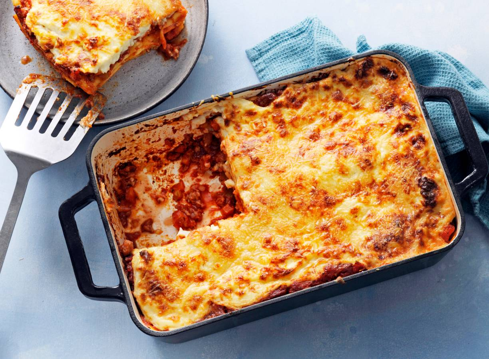

lasagne

Ingridiënten
- olijfolie
- gemengd gehakt 500 g
- wortelen 2
- look 1 teentje
- uien 2
- courgette 1
- (Parijse) boschampignons250 g
- oregano1 takje
- verse basilicum
- Provençaalse kruiden1 koffielepel
- rode wijn1 dl
- passata75 cl
- zout
- peper van de molen
- boter30 g
- bloem30 g
- melk4 deciliters
- muskaatnoten
- gemalen kaas200 g
- lasagnevellen24
Bereiding
- scheutjes olijfolie500 g gemengd gehakt2 wortelen1 teentje look2 uien1 courgette250 g (Parijse) boschampignons1 takje oregano verse basilicum1 koffielepel Provençaalse kruiden1 dl rode wijn75 cl passata zout peper van de molen Zet een ruime kookpot op een matig vuur. Giet er een scheutje olijfolie in.
- Bak het gehakt in de hete olijfolie. Roer regelmatig om.
- Pel de uien en snipper ze fijn. Plet de look tot pulp.
- ...
- Bak de lasagne gedurende 30 minuten in een oven van 180°. en klaar!